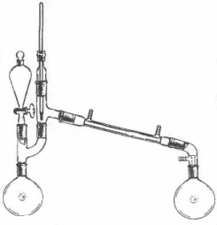
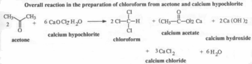
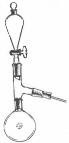
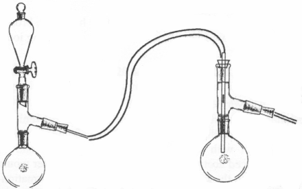

|
Ether [60-29-7](aka,ethyl ether,diethyl ether)Ether is hot on the DEA's list of suspect chemicals and is officially illegal to possess. It is relatively easy to produce if one has the proper work area to do it safely. Good ventilation (a fume hood) is a must to prevent dangerous concentrations of ether from building up in the air. [1]Place 2 pounds of concentrated sulfuric acid in a 3 neck round bottom flask. Place a thermometer through a stopper (or glass thermometer holder) and into one of the flask's holes. Be sure the thermometer reaches into the sulfuric acid. Into a separatory funnel place 3 pounds of ethanol (190 proof). If your separatory funnel will not hold all of the ethanol just keep the funnel filles as the reaction proceeds. Use the final neck to set up a simple distillation apparatus. In the collection flask place ice to help condense the ether. Heat the sulfuric acid to 280�F (or 138�C). When this temperature is reached open the stopcock on the separatory funnel and allow a slow steady stream in. Do not allow the temperature to exceed 286�F (141�C) or ethene will begin to be produced instead of ether. Separate the ether from the ice water with a separatory funnel,wash with 10% sodium hydroxide solution, dry over calcium chloride for 24 hours, and redistill the ether. Ether boils at 35C, density at 30�C--.7019, at 20�C---.7134.
Anhydrous EtherDry ether can be prepared by letting ether dry over thin slices of sodum metal (or sodium wire) for 24 hours. Use 5g of sodium for every 100g of ether. Distill the ether over fresh sodium metal under inert atmosphere. To generally see how to set up your apparatus for inert atmosphere look under methylenation of 4-allyl catechol in chapter five. Instead of leading the nitrogen to the top of a reflux apparatus as shown, you would lead it into a distillation apparatus where the thermometer normally goes. You will also need to lead the nitrogen through a flask containing calcium chloride or other drying agent to remove moisture from the nitrogen before it enters the distillation apparatus. This all serves to keep the ether from reabsorbing moisture from the air. Stopper the receiving flask for storage of this dry ether. Peroxide Formation in EtherIn addition to the danger of explosions from the build up of ether vapors. Explosive peroxides that form from prolonged contact with oxygen in the air pose a significant risk to the chemist. Even air trapped inside the bottle will form significant amounts of peroxides in time; therefore, before using ether that has been stored over a period of time one should first test for peroxides and then treat the ether if necessary. TEST A: .1g of sodium iodide is dissolved in 1 ml of glacial acetic acid and this solution added to 10ml of the ether to be tested. Formation of a red color due to free iodine formed indicates the presence of peroxides. TEST B: 5ml of a 1% ferrous ammonium sulfate solution, .5ml of 1 N sulfuric acid, and .5 ml of .1 N ammonium thiocyanate are mixed. If color is present in the solution, it is decolorized by adding a trace of zinc powder. This is added to an equal amount of ether to be tested. If a red color develops peroxides are present. REMOVING PEROXIDES: To 1 liter of ether, add 40g of a 30% aqueous ferrous sulfate solutions (12g of ferrous sulfate in 28g water). The reaction can be vigorous if appreciable amounts of peroxides are present. Separate the ether and dry it over calcium chloride or magnesium sulfate and distill.
OTC EtherFor those who don't care to synthesize ether, there is a readily available source in the automotive section of your local department store. Most people know it as starting fluid. The main component is diethyl ether. The current leading K-mart brand contains heptane(bp 98�), dimethyl propyl methane (2-methyl pentane, bp 60�), and diethyl methyl methane (3-methyl pentane, bp 63�) as added ingredients. The other ingredients all boil significantly higher than ether so the ether can be removed by distillation. To collect the ether for distillation, spray the contents of the can into a flask that is nestled in crushed ice (in a well ventilated area or outside). Once can use one of the "straws" tha comes with a can of WD-40 to spray the starting fluid contents well into the flask. Distill the liquid collecting the portion boiling up to 35�C.
Chloroform [67-66-3] In a 1000ml flask, mix 300g of calcium hypoclorite (swimming pool
chlorine) and 300ml of water.Mix
thoroughly so that no chunks are left. To the separatory funnel add
50g (63.5ml) of acetone. Acetone can be purchased in teh paint section
of any store that sells paint.. Run water through the jacket of the
condenser and set the receiving flask in an ice bath. Allow the acetone
to slowly run into the reaction flask so that the tempereature does
not rise above 45�C. Cool with a water bath if necessary. When all the
acetone is added, heat the flask with a water bath to distill over the
chloroform. It will distill over in the range of about 56-66�C. Wash
the chloroform that distills over with an equal volume of water and
then dry it overnight with calcium chloride. Finally, distill the chloroform
(bp 61-62�C, density 1.48)  Chloroform can also be prepared by the following method. Decomposition in ChloroformChlorform decomposes under the influence of light, air, and moisture. After storage, it therefore contains phosgene (carbonyl dichloride, COCl2), HCl, chlorine and other chlorinated methane products. For this reason most purchased chloroform contains from 0.5 - 1.0% ethanol as a stabilizer. The ethanol will react first before any chloroform decomposes. The formation of phosgene and HCl can be represented as follows:
Formic Acid[64-18-6](CHOOH)[3] Mix an equal amount of glycerine and oxalic acid and place in a flask. Heat this mixture at 75-90�C. Continue heating until no more CO2 bubbles out. Fresh oxalic acid is added and the process continued. When enough acid is made, distill it over using the proper apparatus and raising the temperature with an oil bath. 90% formic acid is collected. Alternatively, you can place the mixture in a distillation apparatus with a vacuum connection. Read the temperature with the thermometer placed into the mixture. Heat the mixture to ~90�C, but while under reduced pressure. As the reaction proceeds the formic acid will distill over. This takes about 4 to 5 hours for 500g of glycerine and 500g of oxalic acid.
Allyl Alcohol[107-18-6] (based on 500g of glycerine and 500g of oxalic acid)
Pure Allyl AlcoholTo the aqueous allyl alcohol solution is added 10g portions of anhydrous potassium carbonate. The heavier aqueous layer is removed with a separatory funnel. Continue this procedure until no layer separates and the potassium carbonate remains solid. Allow time to be sure no separate layer will form. Filter off the solid and collect all that distills between 94-97�C. The alcohol obtained is 90-98% pure.
TolueneToluene in its commercial grade is known as Toluol and is sold by the gallon and pint sizes in hardware stores as a paint thinner. Methylene Chloride[75-09-2]Methylene chloride is the main component of paint strippers. These strippers also contains a reasonable amount of methanol that can be saved. They caome as a gelatinous substances because of a thickening agent present. If one distills the stripper, methylene chloride will be the first component to distill over, followed by methanol. The remaining residue is the thickening agent which will cling to the glassware. The thickener left can be scraped out with a coat hanger (methylene chloride bp 40�C/ methanol bp 65�C)
EthanolEthanol is the common alcohol that we drink. Any alcoholic beverage could be distilled to produce this alcohol in a maximum concentration of 95% (vol/vol). To get any higher concentration you have to resort to other means. There is no need to distill alcoholic beverages, though, since 190 proof grain alcohol (95%) is available at the liquor store.
Anhydrous Ethanol[64-17-5] To 1 liter of 190 proof grain alcohol is added 200g of calcium oxide.
Calcium oxide is commonly called lime, but it should not be confused
with the lime sold for agriculture which is calcium anbd magnesium carbonate.
The mixture is refluxed for 24 hours in a reflux apparatus fitted with
a calcium chloride tube to keep out atmospheric moisture. The alcohol
is then distilled off. This results in 99% ethanol which is treated
again with 35g of calcium oxide to yield 99.7% ethanol.
Hydrobromic Acid(48%) [5]Hydrobromic acid is not as commonly available as the components it can be made from, namely sodium bromide and sulfuric acid. It's preparation is straight forward and a good quality constant boiling 48% solution can be obtained.
220g of KBr (potassium bromide) or 190g of NaBr (sodium bromide) is
dissolved in 200ml of distilled water and chilled in an ice bath. 90
ml of concentrated H2SO4 is chilled in the ice bath and then slowly
added to the chilled bromide solution being sure not to allow the temperature
to rise above 75�C, in order not to form any free bromine. The solution
is cooled to room temperature and the K2SO4 that was formed is filtered
out. The solution is then placed in a 1000ml boiling flask in a simple
distillation apparatus. Add a few boiling chips. Start a flow of water
through the condenser and heat with flame through a wire gauze. Water
will distill over first, but when the temperature reaches 125�C replace
the receiving flask with a clean flask. Monitor the temperature as it
will continue to rise to 126�C and remain there steadily until the constant
boiling solution has distilled over. When the temperature begins to
drop stop the distillation. [It is important to know the correct temperature
in order to collect the proper fraction. To calibrate the thermometer
first boil water in the apparatus and note the temparature. If it reads
100C, then the thermometer reads correctly. If it reads say 101�C, you
should substract one degree when reading your thermometer. If it reads
say 99C, you should add one degree when reading your thermometer.] Even
purer HBr can be obtained by redistilling and collecting the portion
boiling at 126C.
Hydrogen Chloride Gas [6]
Hydrogen Iodide(57%) [7]Hydrogen iodide can be prepared by the reaction of hydrogen sulfide gas on iodine. The hydrogen sulfide (H2S) is generated by reaction of dilute HCl solution on iron sulfide (fools gold, pyrite) in a gas generator. Hydrogen sulfide is what we commonly know as rotten egg gas and the smell of stove gas since it found in both. This is what will kill most people. Don't let its familiarity disguise it's hazards. It is extremey poisonous and exposure to small quantities numbs ones perception of increasing concentrations; although, it will remain unmistakably present. To generate the H2S dilute muriatic acid with an equal volume of water and fill the separatory funnel. Fill the reaction flask with powdered iron sulfide. Run in the HCl solutioan at such a rate as to keep steady bubbling in the receiving flask. The H2S can be bubbled through a flask containing water to remove HCl(not shown) before entering the receiving flask. The receiving flask should contain a constantly stirred (magnetic stirrer) suspension of 120g I2 (iodine, solid not tincture) and 150 ml water. The H2S that is not absorbed in the iodine suspension is bubbled through a lye solution(not shown) and then out through the fume hood. The solution will become clear(from red) and sulfur will accumulate in the flask when the reaction is complete. The sulfur is filtered out and the solution boiled in a hood to drive out dissolved H2S gas. The boiling is continued until no black precipitate(copper sulfide) forms when 1ml of the solution is added to a cupric nitrate solution (1g in 10ml of water). The solution is then distilled being sure to add boiling chips. The fraction boiling from 125�C to 127�C is collected. This is the acetropic 57% solution, bp 126�C(@760mmHg), density 1.70. Store the acid in a dark bottle and use soon after preparation to avoid considerable decomposition. The yield is 90% based on iodine consumed. Chlorine [8]Chlorine can be simply prepared using the same gas generator as used for HCl and H2S. Fill the separatory funnel with muriatic acid (hydrochloric acid from the hardware store). Fill the reaction flask 1/4 full with calcium hypochlorite (swimming pool chlorine). Slowly add the acid solution to the flask and lead the gas formed through the tubing to the solution receiving the gas. Be warned that chlorine gas is much more overpowering and destructive to mucous membranes than HCl and ammonia. Excellent exhaust is a must. Chlorine gas can also be prepared by adding sulfuric acid to a mixture of table salt and manganese dioxide. The HCl that is formed from NaCl and sulfuric acid is immediately oxidized to chlorine. Some info on the preparation of the other halogens, bromine and iodine, can be found in Comprehensive Inorganic Chemistry Vol III such as isolation iodine from kelp ash. Acetic Anhydride(from acteone and acetic acid) [9][108-24-7] Acetic Anhydride is hot on the DEA's list due to its use in the manufacture
of phenylacetone for methamphetamine production. It is conveniently
produced from glacial acetic acid by bubbling ketene through it. Even
diluted solutions of acetic acid could be used since the keten would
react with water to produce acetic acid and water would react with acetic
acid anhydride to produce acetic acid. In time, all of the water would
be consumed and only acetic acid left to react with the ketene. All
that is needed for formation of ketene is acetone and some glass blowing
skills. See the reference cited for details. In place of chromel A,
one could probably use nichrome wire(also a nickel-chromium alloy) from
a toaster and the toaster's own plug to run it from.
Acetic AcidAcetic acid is also referred to as glacial acetic acid in its pure form since it freezes in cool weather(16.7�C) and forms chunks(glaciers) that float in the unsoldified portion. It boils at 118�C and has a liquid density of 1.053. Acetic aid in solution is what we commonly know as vinegar. The vinegar purchased in the store is quite dilute, but could be concentrated. Refer to Dicks's Encyclopiedia of Practical Reciepts and Processes for simple methods of doing so. Dick's Encyclopedia has been reprinted as a part of Granddad's Wonderful Book of Chemistry by Kurt Saxon. The sodium acetate mentioned in some of the methods can be made by addition of sodium hydroxide solution to vinegar until the smell of vinegar is barely perceptible and then distilling off the water.
AmmoniaAmmonia gas is easily prepared with the gas generator apparatus used for HCl, etc. Add an equal volume of red devil lye or other quality lye(sodium hydroxide) to water. Stir until it is dissolved. A large amount of heat will be evolved in forming the solution. (At 50% concentration sodium carbonate will settle out and on exposure air, CO2 reacts with the sodium hydroxide to form sodium carbonate, so keep stoppered). Pour the solution into the separatory funnel in the apparatus. The reaction flask is filled with ammonium nitrate fertilizer which is about half ammonium nitrate and half ammonium chloride. The sodium hydroxide will release ammonia and form sodium chloride(table salt) and sodium nitrate. Lead the ammonia through the tubing and into the solution requiring the ammonia.
Determining Concentration Scale weight weight of liquid * concentration When the scale shows this increase in weight, you have the desired concentration. Since weight in the tens or hundreds og grams will be weighed, an inexpensive school balance can be used with 0.5-1g accuracy. Density/volume Another way to determine concentration is to first determine the density
of the solution. Sine beam scales that can't hold a whole beaker full
of liquid can support a weight from the beam(with a thread). This weight
can first be weighed in the air and then weighed while suspended in
the solution. The difference in this weight divided by the volume of
the weight is the density of the solution. The volume of the weight
is easily found by submerging the weight in water in a graduated cylinder
and measuring the volume change. Saturated solution Since nearly all of the ammonia will be absorbed by the solution before it is concentrated, one can easily tell when it has reached this point(when the smell of ammonia becomes quite strong). The concentration is then just a function the particular solvent's temperature. In general, the lower the temperature the more ammonia will dissolve. Following are the saturation concentrations of solvents at various temperatures.
HydrogenAlthough hydrogen is not used in any of the syntheses in this book it's simple preparation is worth mentioning. In the spearatory funnel of the HCl gas generator, put a lye solution made from equal volumes of red devil lye(sodium hydroxide) and water. Fill the reaction flask half way with folded or rolled up pieces of aluminum foil. Feed in the lye solution at a rate to meet desired production. Feeding the gas from the generator through a flask containing calcium chloride will remove water vapor. Both the dissolution of the lye in water and the reaction with aluminum generate a lot of heat so be careful handling your apparatus. (Try filling plastic bags with hydrogen)
Sulfur TrioxideSulfur trioxide when combined with water forms H2SO4, sulfuric acid. Although sulfuric acid can be bought with relative ease, fuming sulfuric acid cannot. Fuming sulfuric is 100% sulfuric acid with sulfur trioxide dissolved in it. It is also called oleum. This is not called for in any particular synthesis in this book, but its application can be very useful for the outgoing chemist. Adding carbon tetrachloride to it in the gas generator apparatus will produce phosgene(a deadly war gas and highly reactive intermediate compound). Reacting it with methyl alcohol gives dimethyl sulfate(a mehtylating agent)(Guyot and Simon, Chemical Abstracts, 539, 1920.) To produce sulfur trioxide, sodium bisulfate is first dried in a thin layer on a pan in an oven set at 300�F. Let it dry for at least an hour. The sodium bisulfate is swimming pool pH minus adjuster. The sodium bisulfate is then placed in a flask set for distillation. Heat this under a gas flame. The bisulfate will melt and convert to sodium pyrosulfate and water. Try to control the heat to where water is just being produced. Collect the water and discard. When no more water is produced heat the flask more vigorously and the sodium pyrosulfate that was previously formed will decompose into sulfur trioxide and sodium sulfate. Collect this gas in a cooled flask. It will liquify and then solidify if the temperature is low enough. If fuming sulfuric acid is the goal, collect the gas in chilled concentrated sulfuric acid. One could collect the gas in water and form the sulfuric acid first but that would take more time and sodium bisulfate. Sulfur trioxide can be produced in a similar fashion by heating ferrous sulfate(copperas, iron sulfate for gardens) or ferric sulfate to a read heat after first being dried in an oven for several hours. This is the method employed for sulfuric acid manufacture before the chamber process for burning sulfur was developed. Iron oxide, rust, is left afterward. Heating it hot enough is the trick.
White PhosphorusWhite phosphorus is another starting point for many compounds such as phosphorus trichloride, phosphorus tribromide, phosphoric acid, and phosphorus pentoxide. One must be careful in handling phosphorus. Forceps and other instruments must be used in handling it since the heat from ones body would ignite it in air. It will ignite in moist air at 30�C. It can be melted under water at 44.1�C. 50-100mg is fatal when taken internally. External exposures can lead to nechrosis of the bone which was an industrial disease known as phossy jaw when matches were still manufactured from white phosphorus. The red form of phosphorus is the one people are more familiar with since it can be handled more easily. It only burns in air when heated to 260�C and it is relatively non-toxic as long as it does not contain the white form as an impurity. Phosphorus' preparation was kept secret by the first alchemists who discovered it. Luckily for us, its preparation is now well known. Make a clay retort with a lid from modeling clay and bake it in an oven or kiln. Fill the retort 1/3 of the way with a mixture of Triple siper phosphate from the local nursery and 1/4 of the phosphate's weight of sand and 1/4 of the phosphate's weight of charcoal. The mixture should be as finely powdered and well mixed as possible. A high quality charcoal or activated charcoal from the fish section of a pet store should be used for charcoal. Place the lid on the retort and seal with clay or cement. With the neck of the retort dipping in a container of water, begin heating the retort. The temperature must eventually rise to 1450�C. This can be accomplished by heating the retort with coal or an acetylene torch. It can be preheated with a propane or natural gas flame, but they are not hot enough themselves. Building a brick enclosure around the retort with an opening for the neck and flame will help maintain the temperature. White phosphorus and carbon monoxide will distill over into the water where the phosphorus will condense and the carbon monoxide bubble out. The reaction can be summarized by the following equations.
Acetamide [10]Acetamide is used to later synthesize methylamine. Acetamide itself is easily prepared from ethyl acetate and saturated ammonia solution. The ethyl acetate needed can be obtained by distilling denatured alcohol(ethyl acetate is the major component) purchased at the hardware store and collection the portion boiling around from 70-78�C. Wash this fraction with sodium carbonate solution, then water, dry over calcium chloride and redistill collection the portion boiling at 77�C. The best thing about this route to methylamine is that every component is commonly available. 200 grams of ethyl acetate are placed in a flask followed by 300ml of 28% commercial ammonia (or 195ml H2O). Cool this mixture in an ice salt bath to -8 to -10C. Bubble in dry ammonia gas by running ammonia gas from the generator through a flask containing calcium chloride and then into the mixture. When the solution is saturated(smell of ammonia is strong from undissolved gas) stopper the flask tightly and let it sit in a cool place for 3 days. Within a day or so the layers will merge into one. After 3 days, distill the contents of the flask under reduced pressure on a boiling water bath. Distill the residue on an oil bath under reduced pressure collecting the distillate in a cooled receiving flask. This is acetamide. Acetamide melts at 81�C, bp 222�C, @100mmHg bp 158�C, @40mmHg bp 136�C.
Mercury Chloride[7487-94-7]Mercury chloride(HgCl2, mercuric chloride) is prepared from mercury by the action of aqua regia or chlorine water. It is also prepared by first forming the sulfate with concentrated sulfuric acid and then subliming it with manganese dioxide and table salt. (see Thorpe's Dictionary of Applied Chemistry). Mercuric chloride is a white crystalline solid that melts at 227�C and sublimes at 300�C. Adding a small amount of sodium hydroxide solution forms a yellow precipitate of HgO. Mercurous chloride, calomel, forms a black precipitate with soidum hydroxide solution. Aqua regia is prepared by mixing strong nitric acid (1 volume) and muriatic acid (4 volmues). The nitric acid acts to dissolve some of the mercury where it is then acted upon by free chlorine(Cl2). The chlorine is formed in aqua regia according to the folowing equation.
AcetoneAcetone is soluble in water and in 70% strength it is sold as finger nail polish remover. Alongside other solvents, acetone is sold in the pint, gallong and 5 gallon sizes in the paint section of hardware stores. In this form, it is full strength. Water content in this commercial form is low since it does not form an azeotrope with water, but drying overnight with calcium chloride or potassium carbonate and distilling the solvent will remove much of the water that is present. Addition of phosporus pentoxide to this dry acetone and distilling will reduce the water content to approximately 0.01-0.02%. Acetone has a boiling point of 56.5�C and a density of 0.788 g/ml
| |||||||||||||||||||||||||||||||||||